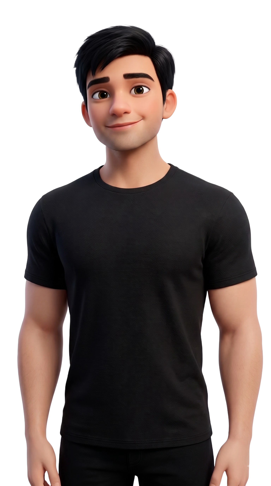

I design and build websites end to end — layout, type, motion, code. Mostly for founders and small teams who need the whole thing, not half of it.
See My WorkI design and build websites. Both halves, same person.
What I do The layout, the type, the motion and the code are decisions made by one head instead of handed across a wall.
What I'm doing now Client work, self-directed builds, and AI work — retrieval systems that let you ask questions of your own documents and get answers that cite where they came from. Same job as everything else on this page: take something complicated and make it legible.